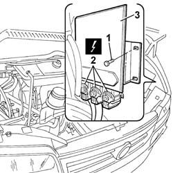

1056B82 INJECTION/IGNITION SYSTEM E.C.U. (ONE) - R + R
- Path
- Procedures > 10 ENGINE UNIT > 1056 PETROL INJECTION SYSTEM > 1056B MULTI-POINT INJECTION SYSTEM (MPI) > 1056B82 INJECTION/IGNITION SYSTEM E.C.U. (ONE) - R + R
- Kind
- repair procedure (removal / refitting; the operation number is the code)
- Applies to
- engines: 2.0 16V; all production periods
- Interactive page
- https://sloeber94.github.io/elrnDB-fDct/en/#/244000815
Applies to: engines: 2.0 16V; all production periods
 Removing
Removing
 Refitting
RefittingSee in Op. 1048A10
1. Undo the fixing bolts.
2. Disconnect the electrical connections for the control unit.
3. Remove the injection/ignition system control unit.

Applies to: engines: 2.0 16V; all production periods
Refitting
Removing- Connect the electrical connections for the control unit.
- Place the control unit in position and tighten the fixing bolts.
See in Op. 1048A10